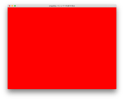
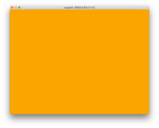
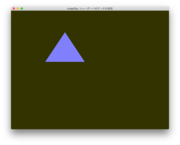
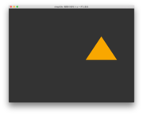
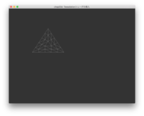
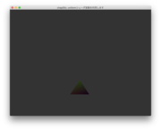

OpenGL SuperBible第6版で現代的なOpenGLを学び始めました．本を参考にMavericksでサンプルコードを作っています．ずぶの素人のやっていることなので，信頼性は？？？です．ちゃんと動いていないコードもあります．
以下ではHomebrewが利用できること，したがってXcodeとそのコマンド行インタフェイスもインストールされていることを仮定しています．
有名なGLUTによる「手抜き」OpenGL入門にしたがってGLUTを使おうかと思ったのですが，Appleはあまり熱心にGLUTをサポートしなさそうな雰囲気なのでGLUTに替えてGLFW3を使っています．SuperBibleはGLFW2にもとづいているのですが，基盤部をGLFW3に移植しました．あまりわかっていないのですが，GLEW (The OpenGL Extension Wrangler Library)も利用しています．これらのほかにビルドシステムとしてCMakeを，行列を扱うための数学ライブラリとしてGLMを利用しています．いずれもHomebrewで簡単にインストールできます．
CMakeのインストール．システム非依存のビルドツールとしてCMakeを使っています．今回がCMakeの使い始めです．不慣れなので，おかしい点が多々あると思います．
GLFW3のインストール．Homebrewを通して，GLFW2とGLFW3という異なるバージョンをインストールすることができます．このような場合，homebrew/versions を tap してインストールします．
brew tap homebrew/versions
brew install glfw3
GLEWのインストール
brew install glew
GLM (OpenGL Mathematics)のインストール
brew install glm
CMakeLists.txt: CMakeの設定
bin/init: CMakeのプロジェクトを初期化するためのスクリプトです．私はこのGitプロジェクトはDropbox上に置き，CMakeのビルドはDropbox外のディレクトリ($HOME/projects/glfw)で行っているのですが，そのための設定です．
src/: SuperBible に沿ったサンプルコード
src/test: GLEW, GLFW, GLM (glm.cpp, glm_sample.cpp) の簡単なサンプルコードです．
| chap02a | chap02b | chap02c |
|---|---|---|
|  |  | |
| chap03a | chap03b | chap03c |
|---|---|---|
|  |  |  |
| chap03d | chap03e | chap03f |
|  |  |
 |
chap03a (VS, FS): Vertex shaderとFragment shaderを利用した例．背景色が変化するなか，白い三角形が弧を描きます．
chap03b (VS, FS): Vertex shaderを介してFragment shaderに三角形の色を与えることで色を変化させます．
chap03c (VS, FS): Vertex shaderからFragment shaderへの値の伝達においてInterface Blockを利用しました．
chap03d (VS, TCS, TES, FS): Tessallation control shaderとTessallation evaluation shaderを追加し，三角形をワイヤーフレームで描画しています．
chap03e (VS, TCS, TES, FS): Geometry shaderを追加し，Tessell化した三角形の頂点を点描しています．
chap03f (VS, TCS, TES, FS): Fragment shaderでピクセルの位置に応じて色を決定することで三角形にグラデーションを与えます．
chap03g (VS, TCS, TES, FS): Fragment shaderへ与える色情報をVertex shaderを介してCPU側から与えようとした例だが，うまく動作しません．どうやらFragment ShaderにVertex shaderから与えているつもりの色情報が正しく届いていないようです．でも，原因は不明．
| chap05a | chap05c |
|---|---|
 |
 |
chap05a (VS, FS): 複数のデータをシェーダーに送る方法．Vertex Array Object と Vector Buffer Objectを連携させる方法．例題としては，三角形の形状と色の情報をアプリケーション側から送っています．
chap05b (VS, FS): シェーダ側で複数の種類のデータに構造体でまとめあげた場合の，アプリケーション側からのデータを送る方法．できあがるのはchap05aと同じ例題のはずなんですが，vs-fs間に他のシェーダがあるときにデータの受け渡しがうまくいかなくなるようです．ただ，原因，究明中．
chap05c (VS, FS): uniformを用いる方法．この例では，VSとFSにアプリ開始からの経過時間をuniformとして与えて，三角形の大きさと色みを変化させています．
chap05d (VS, FS): chap05cと類似した例題です．この例では，uniform変数のかわりにuniformブロックを利用してデータをひとまとめにして書き換える例となっています．chap05dについてのメモ
chap05e (VS1; VS2): Uniformブロックのレイアウトに関する例題です．この例題はデータの保存形式について確認することが目的なので画面出力はありません．chap05eについてのメモ